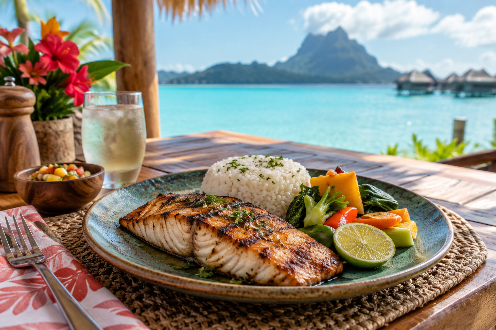

Local meals
Five restaurants serve mostly local fish and rice.
Taniti has ten restaurants across three cuisine categories.

Five restaurants serve mostly local fish and rice.
Three restaurants serve American-style meals.
Two restaurants serve Pan-Asian cuisine.
There are two supermarkets, two smaller grocery stores, and one convenience store open 24 hours a day.